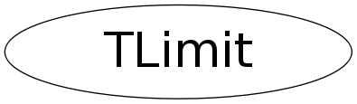

class TLimit
TLimit Class to compute 95% CL limits adapted from the mclimit code from Tom Junk (CLs method) see http://root.cern.ch/root/doc/TomJunk.pdf see http://cern.ch/thomasj/searchlimits/ecl.html see: Tom Junk,NIM A434, p. 435-443, 1999 see also the following interesting references: Alex Read, "Presentation of search results: the CLs technique" Journal of Physics G: Nucl. Part. Phys. 28 2693-2704 (2002). http://www.iop.org/EJ/abstract/0954-3899/28/10/313 A nice article is also available in the CERN yellow report with the proceeding of the 2000 CERN workshop on confidence intervals. Alex Read, "Modified Frequentist Analysis of Search Results (The CLs Method)" CERN 2000-005 (30 May 2000) see note about: "Should I use TRolke, TFeldmanCousins, TLimit?" in the TRolke class description.
Function Members (Methods)
public:
| TLimit() | |
| TLimit(const TLimit&) | |
| virtual | ~TLimit() |
| static TClass* | Class() |
| static TConfidenceLevel* | ComputeLimit(TLimitDataSource* data, Int_t nmc = 50000, bool stat = false, TRandom* generator = 0) |
| static TConfidenceLevel* | ComputeLimit(Double_t s, Double_t b, Int_t d, Int_t nmc = 50000, bool stat = false, TRandom* generator = 0) |
| static TConfidenceLevel* | ComputeLimit(TH1* s, TH1* b, TH1* d, Int_t nmc = 50000, bool stat = false, TRandom* generator = 0) |
| static TConfidenceLevel* | ComputeLimit(Double_t s, Double_t b, Int_t d, TVectorD* se, TVectorD* be, TObjArray*, Int_t nmc = 50000, bool stat = false, TRandom* generator = 0) |
| static TConfidenceLevel* | ComputeLimit(TH1* s, TH1* b, TH1* d, TVectorD* se, TVectorD* be, TObjArray*, Int_t nmc = 50000, bool stat = false, TRandom* generator = 0) |
| virtual TClass* | IsA() const |
| TLimit& | operator=(const TLimit&) |
| virtual void | ShowMembers(TMemberInspector& insp) |
| virtual void | Streamer(TBuffer& b) |
| void | StreamerNVirtual(TBuffer& b) |
protected:
| static bool | Fluctuate(TLimitDataSource* input, TLimitDataSource* output, bool init, TRandom*, bool stat = false) |
| static Double_t | LogLikelihood(Double_t s, Double_t b, Double_t b2, Double_t d) |
Data Members
private:
| static TOrdCollection* | fgSystNames | Collection of systematics names |
| static TArrayD* | fgTable | a log table... just to speed up calculation |
Class Charts
{kind=link}
{kind=link}
{kind=link}
{kind=link}

Function documentation
TConfidenceLevel * ComputeLimit(TLimitDataSource* data, Int_t nmc = 50000, bool stat = false, TRandom* generator = 0)
class TLimit Algorithm to compute 95% C.L. limits using the Likelihood ratio semi-bayesian method. It takes signal, background and data histograms wrapped in a TLimitDataSource as input and runs a set of Monte Carlo experiments in order to compute the limits. If needed, inputs are fluctuated according to systematics. The output is a TConfidenceLevel. class TLimitDataSource Takes the signal, background and data histograms as well as different systematics sources to form the TLimit input. class TConfidenceLevel Final result of the TLimit algorithm. It is created just after the time-consuming part and can be stored in a TFile for further processing. It contains light methods to return CLs, CLb and other interesting quantities. The actual algorithm... From an input (TLimitDataSource) it produces an output TConfidenceLevel. For this, nmc Monte Carlo experiments are performed. As usual, the larger this number, the longer the compute time, but the better the result./*
Supposing that there is a plotfile.root file containing 3 histograms (signal, background and data), you can imagine doing things like:
TFile* infile=new TFile("plotfile.root","READ");
infile->cd();
TH1* sh=(TH1*)infile->Get("signal");
TH1* bh=(TH1*)infile->Get("background");
TH1* dh=(TH1*)infile->Get("data");
TLimitDataSource* mydatasource = new TLimitDataSource(sh,bh,dh);
TConfidenceLevel *myconfidence = TLimit::ComputeLimit(mydatasource,50000);
cout << " CLs : " << myconfidence->CLs() << endl;
cout << " CLsb : " << myconfidence->CLsb() << endl;
cout << " CLb : " << myconfidence->CLb() << endl;
cout << "< CLs > : " << myconfidence->GetExpectedCLs_b() << endl;
cout << "< CLsb > : " << myconfidence->GetExpectedCLsb_b() << endl;
cout << "< CLb > : " << myconfidence->GetExpectedCLb_b() << endl;
delete myconfidence;
delete mydatasource;
infile->Close();
More informations can still be found on this page.
*/bool Fluctuate(TLimitDataSource* input, TLimitDataSource* output, bool init, TRandom* , bool stat = false)
initialisation: create a sorted list of all the names of systematics
TConfidenceLevel * ComputeLimit(TH1* s, TH1* b, TH1* d, Int_t nmc = 50000, bool stat = false, TRandom* generator = 0)
Compute limit.
TConfidenceLevel * ComputeLimit(TH1* s, TH1* b, TH1* d, TVectorD* se, TVectorD* be, TObjArray* , Int_t nmc = 50000, bool stat = false, TRandom* generator = 0)
Compute limit.
TConfidenceLevel * ComputeLimit(Double_t s, Double_t b, Int_t d, Int_t nmc = 50000, bool stat = false, TRandom* generator = 0)
Compute limit.
TConfidenceLevel * ComputeLimit(Double_t s, Double_t b, Int_t d, TVectorD* se, TVectorD* be, TObjArray* , Int_t nmc = 50000, bool stat = false, TRandom* generator = 0)
Compute limit.
Double_t LogLikelihood(Double_t s, Double_t b, Double_t b2, Double_t d)
Compute LogLikelihood (static function)